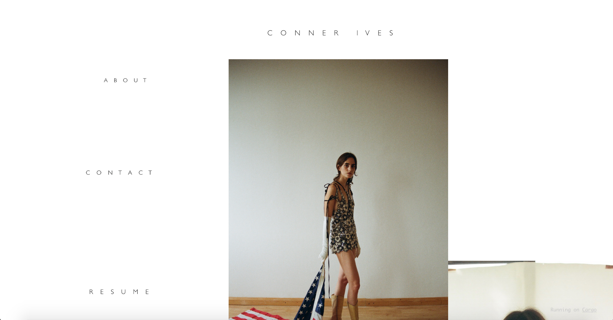
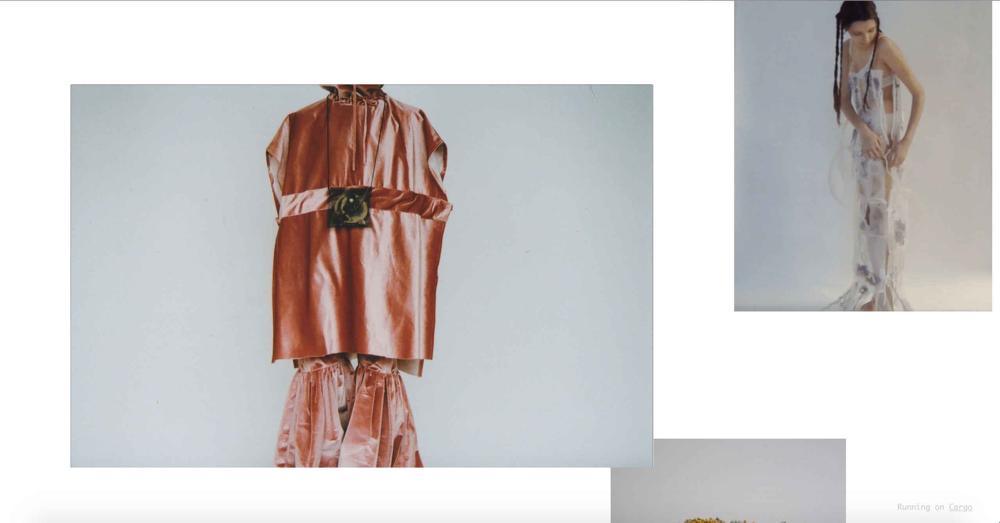

Conner Ives is a fashion design student in Central Saint Martins and this website is his portfolio. I loved the combination of photo and video in this really simple way with a white background only, however it is lacking interaction with only links serving that purpose. As you scroll on his page more images pop up and a video every now and then and they arent arranged in any grid like way but scattered throughout the page. When clicking on an image, more images associated with that pop up in a white box. The webpage needs transtions, animations and interactive elements to make it more playful and freindly. Now it just comes across as dry and boring.
- 
- 